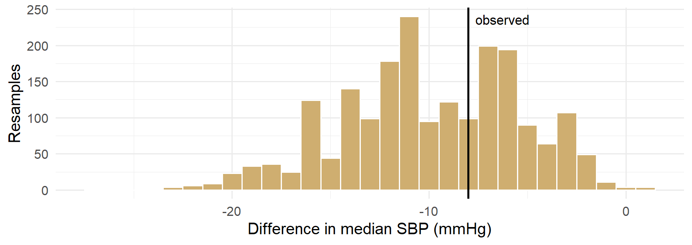
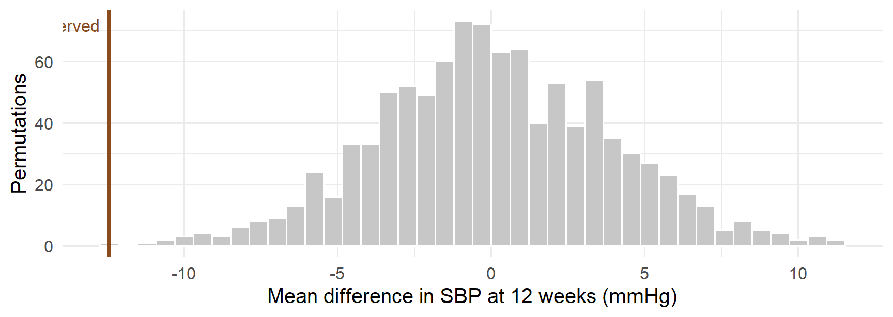
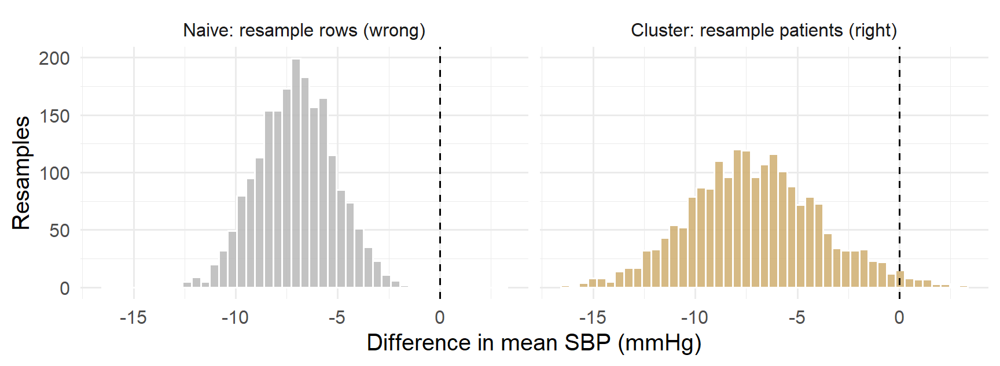

sbp <- c(150, 142, 168, 131, 155)
set.seed(1)
sample(sbp, replace = TRUE) # bootstrap: some values twice, some not at all[1] 150 131 150 142 155sample(sbp) # permutation: same values, new order[1] 168 142 131 150 155BIOS 6301 · Introduction to Statistical Computing
Invalid Date
| Course arc | Sessions | |
|---|---|---|
| Setup and workflow | 0–2 | |
| Data foundations | 3–8 | |
| Modern tools | 9–10 | |
| R programming | 11–13 | |
| Statistical computing | 14–16 | ← today |
Today’s deck develops one part of the current arc; later-session tools are named only when they clarify where this idea will be used.
1 Explain what sampling with and without replacement each estimate, and why one line of code separates them.
2 Write a bootstrap by hand — resample, recompute, collect — and report a bootstrap standard error.
3 Construct percentile and basic bootstrap intervals, and say what each assumes.
4 Name four situations where the bootstrap fails, and recognise one from its output.
5 Build a permutation null distribution, and compute a p-value that is never exactly zero.
6 Choose the correct resampling unit for clustered or longitudinal data — and show what goes wrong when you do not.
| Block | Minutes | |
|---|---|---|
| 1 | One argument apart | 10 |
| 2 | The bootstrap, by hand | 25 |
| 3 | When the bootstrap fails | 10 |
| 4 | Permutation and exchangeability | 20 |
| 5 | Choosing the resampling unit | 20 |
| 6 | Cross-validation, and closing the course | 15 |
Block 5 is the one to protect. If the room is running slow, compress block 3 and the boot pointers — not block 5.
| Resample | Target | |
|---|---|---|
| Bootstrap | with replacement, from the observed data | the sampling distribution of a statistic |
| Permutation | without replacement — a reshuffle of labels | the null distribution under exchangeability |
Which decides, for the rest of your career, which one you reach for:
| You want | Use | You get |
|---|---|---|
| A standard error | Bootstrap | sd() of the resampled statistics |
| A confidence interval | Bootstrap | quantiles, or a reflection of them |
| A p-value | Permutation | how often chance beats what you saw |
The bootstrap answers “how variable is my estimate?” Permutation answers “could chance alone have produced this?”
sbp <- c(150, 142, 168, 131, 155)
set.seed(1)
sample(sbp, replace = TRUE) # bootstrap: some values twice, some not at all[1] 150 131 150 142 155[1] 168 142 131 150 155sample(x) with no other arguments is a permutation of x. You have been writing permutations since Session 14 without calling them that.
The thing you want is a property of the population: the standard deviation of your estimator across repeated samples from it.
You do not have the population. You have one sample — which is your best available estimate of it.
The plug-in principle. Wherever the formula says population, substitute the empirical distribution of your sample, and compute.
So: resample from your data exactly as nature sampled from the population — same size n, drawn with replacement — and watch how the statistic moves.
flowchart LR D["<b>your data</b><br/>n = 60"] --> R["<b>resample</b><br/>n = 60,<br/>with replacement"] R --> S["<b>recompute</b><br/>the statistic"] S --> C["<b>collect</b><br/>one number"] C -.->|"B = 2000 times"| R C --> H["<b>bootstrap<br/>distribution</b>"] style D fill:#f4efe4,stroke:#CFAE70 style R fill:#CFAE70,stroke:#8a7448,color:#fff style S fill:#CFAE70,stroke:#8a7448,color:#fff
Three lines of code, and none of them are new. sample() is Session 14, indexing a data frame by a vector of row numbers is Session 4, and replicate() is a functional from Session 13.
We want the difference in median 12-week SBP between arms. There is no convenient formula for its standard error — which is exactly when the bootstrap earns its keep.
# Difference in median sbp_12, Treatment minus Placebo.
# Takes a data frame with `arm` and `sbp_12`; returns one number.
med_diff <- function(data) {
stopifnot(is.data.frame(data), all(c("arm", "sbp_12") %in% names(data)))
median(data$sbp_12[data$arm == "Treatment"]) -
median(data$sbp_12[data$arm == "Placebo"])
}
obs_med <- med_diff(trial)
obs_med[1] -8Statistic first, resampling second. If the function is wrong, 2000 resamples make it wrong 2000 times.

Figure 1: Bootstrap distribution of the difference in median SBP at 12 weeks.
Centred near the observed value. Ragged, because a median of 30 integers can only land on so many values.
The standard deviation of the resampled statistics is the estimated standard error. That is the whole definition.
A small bias estimate is reassuring. A large one is a signal to stop and think — not a licence to subtract it, which usually inflates variance more than it removes bias.
perc <- quantile(boot_med, c(0.025, 0.975)) # percentile
basic <- 2 * obs_med - quantile(boot_med, c(0.975, 0.025)) # basic
rbind(percentile = perc, basic = unname(basic)) 2.5% 97.5%
percentile -19 -2
basic -14 3| Interval | Rule | Assumes |
|---|---|---|
| Percentile | the 2.5th and 97.5th percentiles of the resamples | the bootstrap distribution is roughly the sampling distribution |
| Basic | reflect those percentiles through the observed value | the shape is right, the centre may be off |
Here they disagree — the basic interval reaches across zero and the percentile interval does not. That disagreement is information, not a nuisance.
The bootstrap is most trustworthy when you have first watched it reproduce a result you can verify.
mean_diff <- function(data) {
mean(data$sbp_12[data$arm == "Treatment"]) -
mean(data$sbp_12[data$arm == "Placebo"])
}
set.seed(17)
boot_mean <- replicate(B, mean_diff(trial[sample(nrow(trial), replace = TRUE), ]))
c(boot_se = sd(boot_mean),
welch_se = t.test(sbp_12 ~ arm, data = trial)$stderr) boot_se welch_se
3.517361 3.571884 Two decimal places apart. Now go back and believe the median result, which has no formula to check against.
More resamples do not improve the estimate. They reduce the Monte Carlo noise in your report of it.
| Purpose | B | Why |
|---|---|---|
| Standard error | 1,000–2,000 | The SD stabilises quickly |
| Confidence interval | ≥ 10,000 | Tail quantiles are estimated from the tail |
| A number going in a paper | 10,000+ | It must not change on re-render |
| Situation | What goes wrong | Symptom |
|---|---|---|
| Small n | The empirical distribution is a poor stand-in; only nn distinct resamples exist | Chunky, lumpy bootstrap distribution |
| Extremes — max, min, range | The extreme of a resample is drawn from a handful of values | A distribution with visible spikes |
| Heavy tails — infinite variance | There is no sampling distribution to estimate | Intervals that grow with B; wild resamples |
| Dependence — clustered, longitudinal, time series | Resampling rows destroys the dependence you needed to keep | Standard errors that are too small, confidently |
Only the last one is silent. The other three announce themselves in a histogram you should have plotted anyway.
set.seed(18)
boot_max <- replicate(B, max(trial$sbp_0[sample(nrow(trial), replace = TRUE)]))
length(unique(boot_max)) # distinct values across 2000 resamples[1] 7[1] 0.634The resampled maximum can never exceed the observed maximum, and it equals it whenever the largest patient is drawn at all — probability 1 − (1 − 1/n)n ≈ 0.63.
The bootstrap distribution of a maximum is a spike at the observed value with a short left tail. It is not a sampling distribution. No amount of B fixes it.
Not installed here — this is a pointer, not a demonstration.
# boot: the classical implementation. Statistic takes (data, indices).
library(boot)
b <- boot(trial, statistic = function(data, i) med_diff(data[i, ]), R = 10000)
boot.ci(b, type = c("perc", "basic", "bca"))
# rsample: tidymodels. Resamples as a tibble of splits.
library(rsample)
bootstraps(trial, times = 1000)boot.ci() gives you BCa intervals — bias-corrected and accelerated — which adjust for both the bias and the skewness we saw two slides ago. That is the single best reason to use the package rather than your own loop.
Null hypothesis: the treatment label carries no information about the outcome.
If that is true, then each patient’s outcome would have been the same whichever label they received. The labels are exchangeable — any reassignment of the 30 Treatment labels among the 60 patients was equally likely.
So: reassign them, thousands of times, and each time compute the statistic. That set of numbers is the null distribution — not assumed, not looked up in a table, but constructed from your own data.
In a randomised trial this is not a modelling assumption. It is a description of what the randomisation actually did.
obs_mean <- mean_diff(trial)
set.seed(19)
P <- 999
perm_stat <- replicate(P, {
shuffled <- sample(trial$arm) # permutation, not a bootstrap
mean(trial$sbp_12[shuffled == "Treatment"]) -
mean(trial$sbp_12[shuffled == "Placebo"])
})
c(observed = obs_mean, perm_mean = mean(perm_stat), perm_sd = sd(perm_stat)) observed perm_mean perm_sd
-12.43333333 0.05789122 3.82457944 Note what is not shuffled: sbp_12 never moves. Only its label does. Shuffling both, or shuffling the outcome instead, gives the same answer here — and stops being equivalent the moment you have a covariate.

Figure 2: Permutation null distribution of the mean difference, with the observed value.
Centred at zero by construction. The p-value is the proportion of this histogram at least as extreme as the line.
With 4 patients per arm there are only choose(8, 4) = 70 possible label assignments. You can enumerate all of them:
small <- trial[c(1:4, 31:34), c("id", "arm", "sbp_12")]
obs_small <- mean_diff(small)
combos <- combn(8, 4) # every way to choose 4 "Treatment"
exact <- apply(combos, 2, function(k) mean(small$sbp_12[k]) -
mean(small$sbp_12[-k]))
ncol(combos) # the entire reference set[1] 70[1] 0.0571With 30 per arm there are choose(60, 30) ≈ 1.2 × 1017. So you sample from them instead — that is all “Monte Carlo permutation” means.
The observed arrangement is one of the possible arrangements. Counting it in both numerator and denominator is not a fudge to avoid zero — it is the correct count.
Report p < 0.001, or increase P. Never p = 0.
The last one is subtle. The null being tested is that the two label groups have the same distribution. A significant result may be a difference in spread or shape, not in centre.
Which is why the two halves of today go together: permutation for the p-value, bootstrap for the interval.
id arm week sbp
1 P001 Placebo 4 158
2 P001 Placebo 8 155
3 P001 Placebo 12 154
4 P002 Placebo 4 146
5 P002 Placebo 8 152
6 P002 Placebo 12 145
7 P003 Placebo 4 131 rows patients
180 60 set.seed(21)
boot_row <- replicate(B, {
idx <- sample(nrow(trial_long), replace = TRUE) # 180 rows, independently
diff_long(trial_long[idx, ])
})
c(estimate = obs_long, se = sd(boot_row)) estimate se
-7.100000 1.878739 2.5% 97.5%
-10.7 -3.4 Perfectly reasonable code. Runs without complaint. Produces a clean, symmetric histogram. The interval comfortably excludes zero.
It is wrong, and nothing on this slide tells you so.
Resample patients, and take all of each patient’s rows with them.
ids <- unique(trial_long$id)
rows_by_id <- split(seq_len(nrow(trial_long)), trial_long$id) # id -> row numbers
set.seed(22)
boot_clu <- replicate(B, {
picked <- sample(ids, replace = TRUE) # 60 patients, with repeats
diff_long(trial_long[unlist(rows_by_id[picked]), ])
})
c(row_se = sd(boot_row), cluster_se = sd(boot_clu),
ratio = sd(boot_clu) / sd(boot_row)) row_se cluster_se ratio
1.878739 3.222562 1.715279 The honest standard error is 1.7 times the naive one. Every interval built on the naive number is 40% too narrow.

Figure 3: Bootstrap distributions of the same estimate under two resampling schemes.
Same data, same estimate, same statistic function. Only the unit changed.
between <- var(tapply(trial_long$sbp, trial_long$id, mean))
within <- mean(tapply(trial_long$sbp, trial_long$id, var))
icc <- between / (between + within)
c(icc = icc, design_effect = 1 + (3 - 1) * icc, inflation = sqrt(1 + 2 * icc)) icc design_effect inflation
0.914293 2.828586 1.681840 With an intra-class correlation near 0.9, three visits carry barely more information than one. The design effect 1 + (m − 1)ρ says how many independent observations your n × m rows are actually worth — and its square root is exactly the factor the cluster bootstrap recovered.
The bootstrap found that number without being told the formula. That is the point of the method.
The same mistake, in the other half of the session:
arm_by_id <- trial_long$arm[match(ids, trial_long$id)]
set.seed(32)
p_rows <- replicate(999, {
s <- sample(trial_long$arm) # shuffles visits, not patients
mean(trial_long$sbp[s == "Treatment"]) - mean(trial_long$sbp[s == "Placebo"])
})
p_pats <- replicate(999, {
s <- rep(sample(arm_by_id), each = 3) # shuffles patients (rows sorted by id)
mean(trial_long$sbp[s == "Treatment"]) - mean(trial_long$sbp[s == "Placebo"])
})
c(p_row_unit = (sum(abs(p_rows) >= abs(obs_long)) + 1) / 1000,
p_patient_unit = (sum(abs(p_pats) >= abs(obs_long)) + 1) / 1000) p_row_unit p_patient_unit
0.001 0.034 An order of magnitude apart. Randomisation happened to patients, so the permutation must too.
Resample the unit that was independently sampled — the unit that was randomised.
| Design | Rows | Resample |
|---|---|---|
| Simple random sample | Patients | Patients |
| Repeated measures | Patient-visits | Patients |
| Cluster-randomised trial | Patients | Clinics |
| Multi-site trial, site-stratified | Patients | Patients, within site |
| Matched pairs / crossover | Observations | Pairs |
| Time series | Time points | Blocks of consecutive points |
Before you write sample(), answer one question in prose: what did this study draw at random?
Fitting and evaluating on the same data is the statistical equivalent of marking your own homework.
set.seed(55)
noise <- as.data.frame(matrix(rnorm(n * 12), nrow = n)) # 12 pure-noise predictors
names(noise) <- sprintf("z%02d", 1:12)
d <- cbind(trial[, c("sbp_12", "sbp_0", "age", "weight_kg")], noise)
fit <- lm(sbp_12 ~ ., data = d)
rmse_in <- sqrt(mean(residuals(fit)^2))
set.seed(56)
fold <- sample(rep(1:5, length.out = n))
pred <- numeric(n)
for (k in 1:5) {
m <- lm(sbp_12 ~ ., data = d[fold != k, ])
pred[fold == k] <- predict(m, newdata = d[fold == k, ])
}
round(c(in_sample_rmse = rmse_in, cv_rmse = sqrt(mean((d$sbp_12 - pred)^2))), 2)in_sample_rmse cv_rmse
8.19 11.10 Next connection: Session 16 reserves time for strings, regular expressions, and practical needs observed during the course.
BIOS 6301 · Session 15 · Resampling Methods